| | Home | 写真集 | 裏日記 | 掲示板 | Link | | Updated on 2005-05-09 7:41 |
結婚披露宴in山口
実家の山口で親戚や近所の方を招いて，結婚披露宴を開きました。 当初は近所の皆さんを招いてのお食事会という話でしたが，いつのまにやら立派な披露宴になっていました。 キャンドルサービスからケーキ入刀まで，楽しませていただきました。
2005年5月5日 結婚披露宴in山口
皆と一緒に!
久しぶりにいとこたちが集まってくれました。
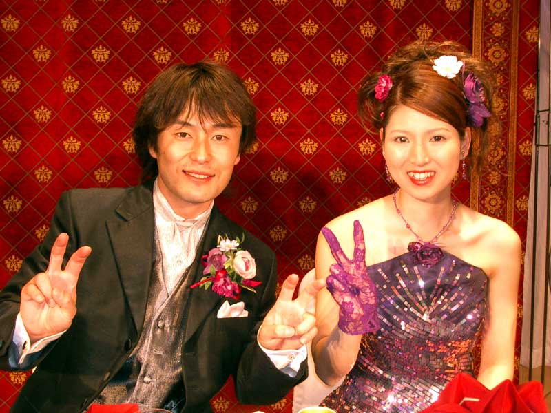 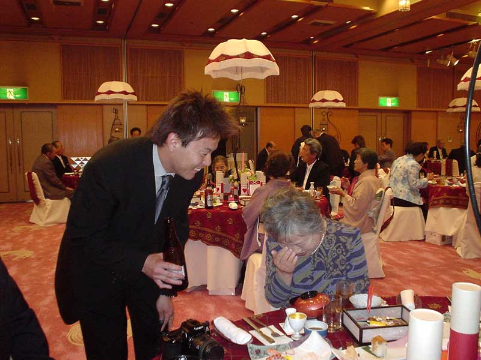 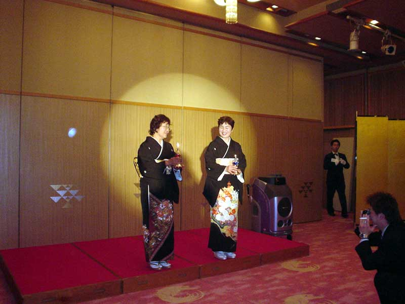 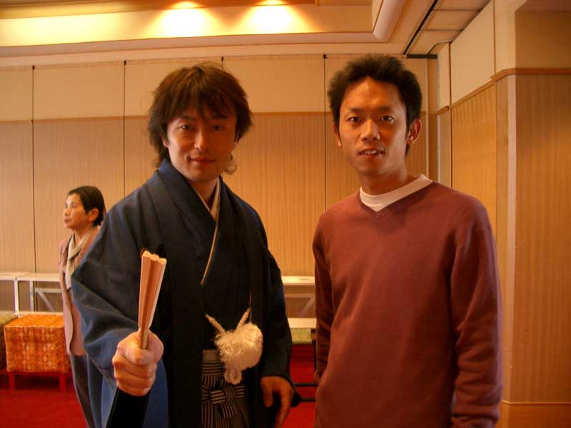 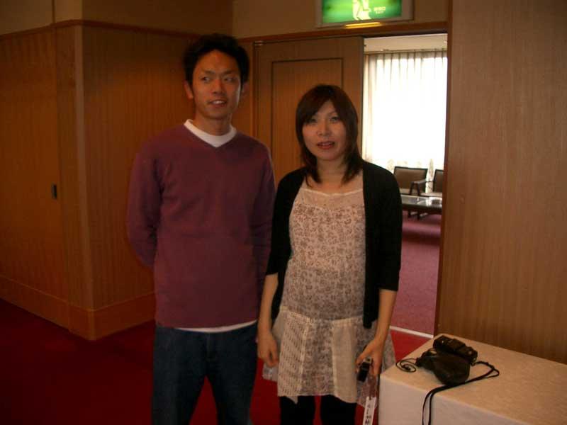 和装
七五三のとき以来，久しぶりに紋付はかまを着せてもらいました。
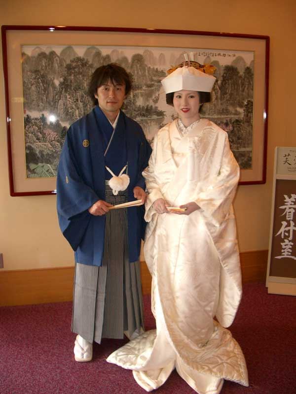 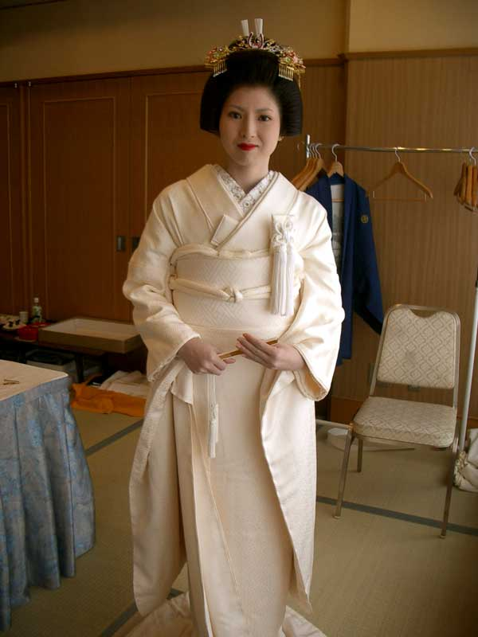 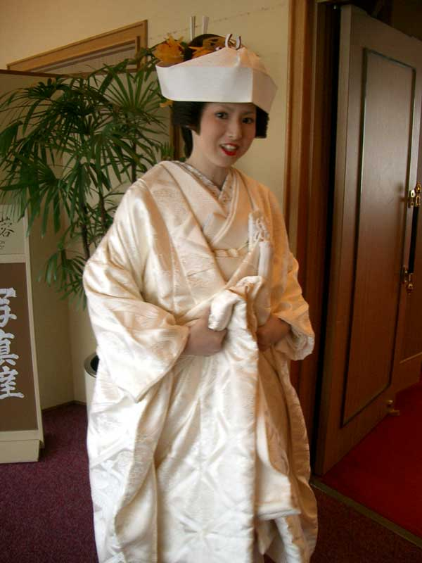 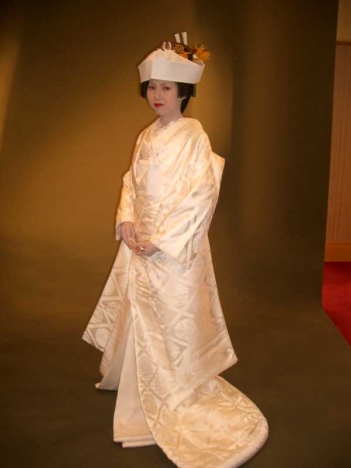 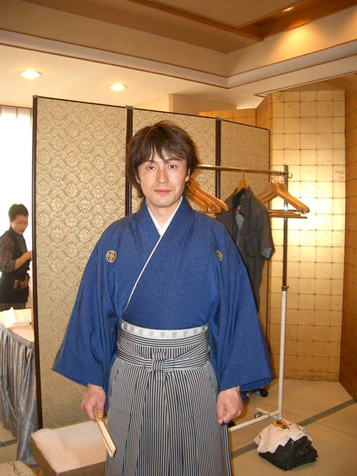 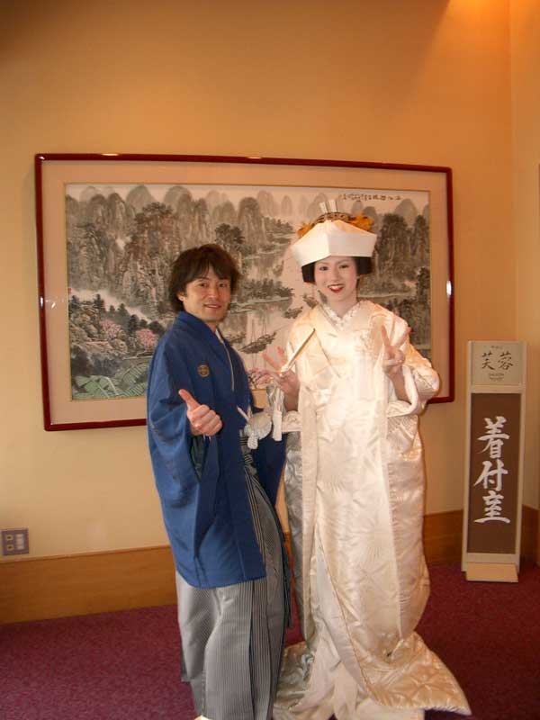 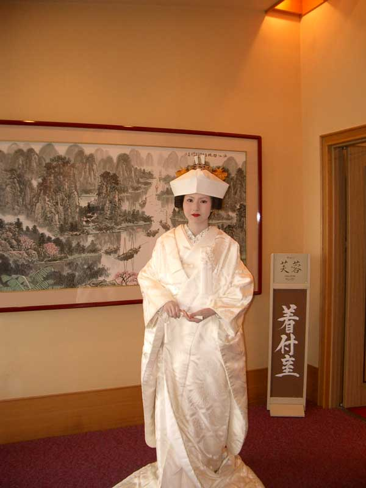
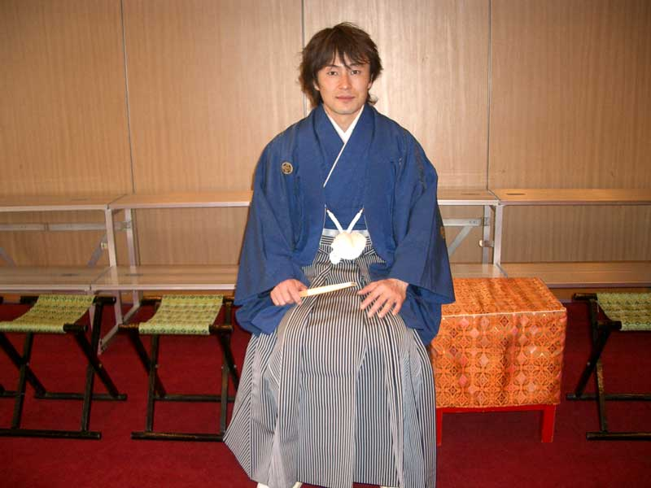 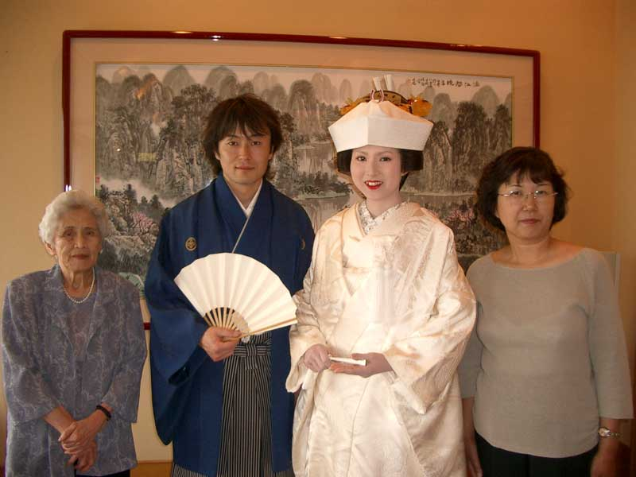 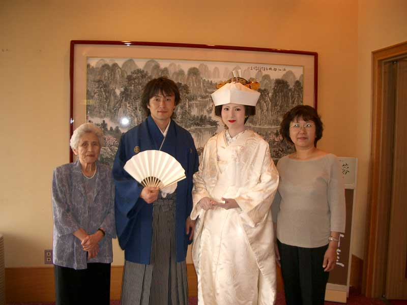 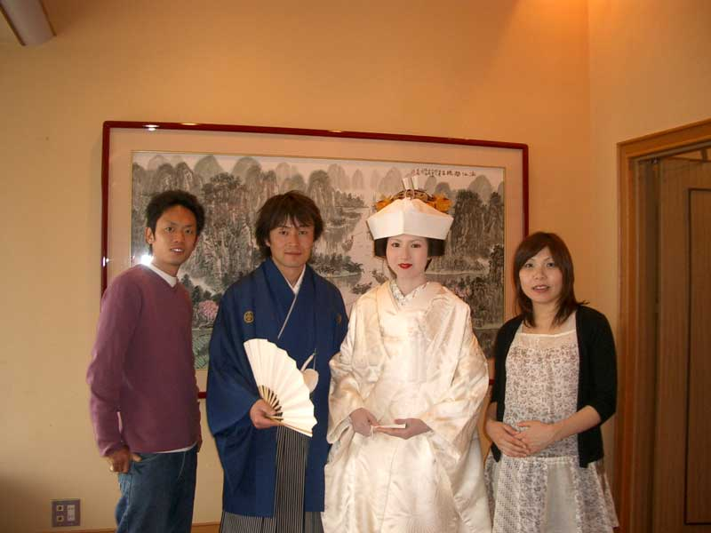 ケーキ入刀(カラードレス)
ケーキ入刀の後は，おきまりのケーキの食べさせ合いっこ。 Mashがあまりに豪快に大きなケーキを食べさせてくれたので，あごが外れちゃいました。
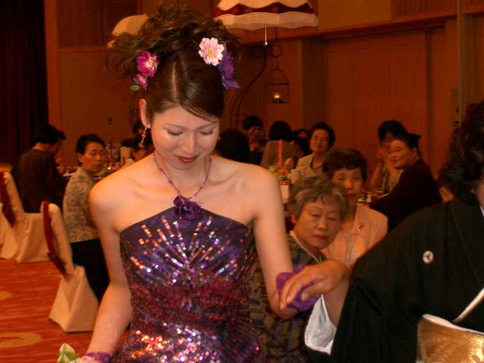 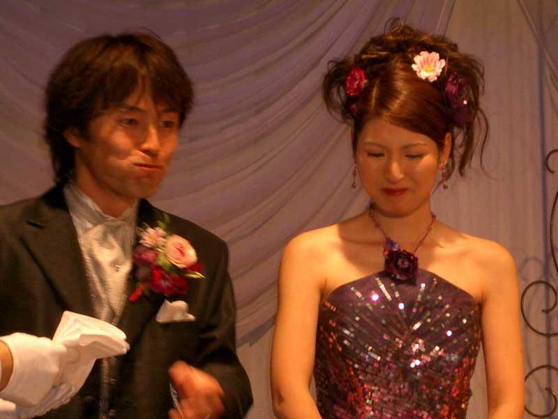 キャンドルサービス(ウェディングドレス)
これまたべたなキャンドルサービスです。なかなか火がつかないろうそくがあって，少々あせりました。
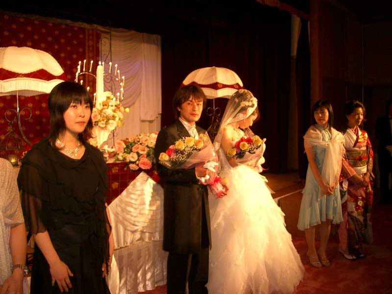 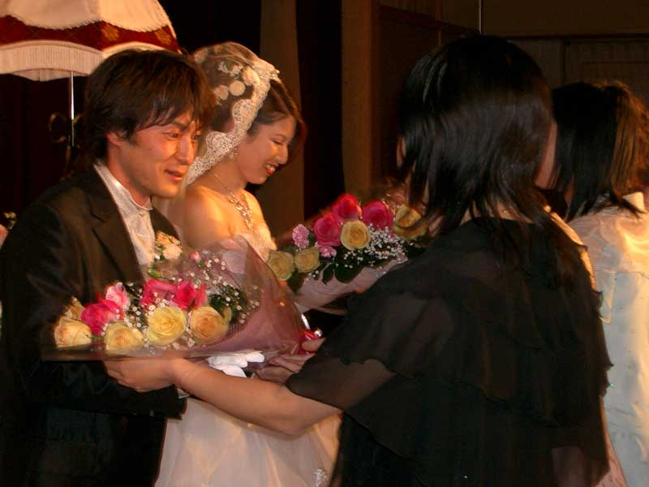 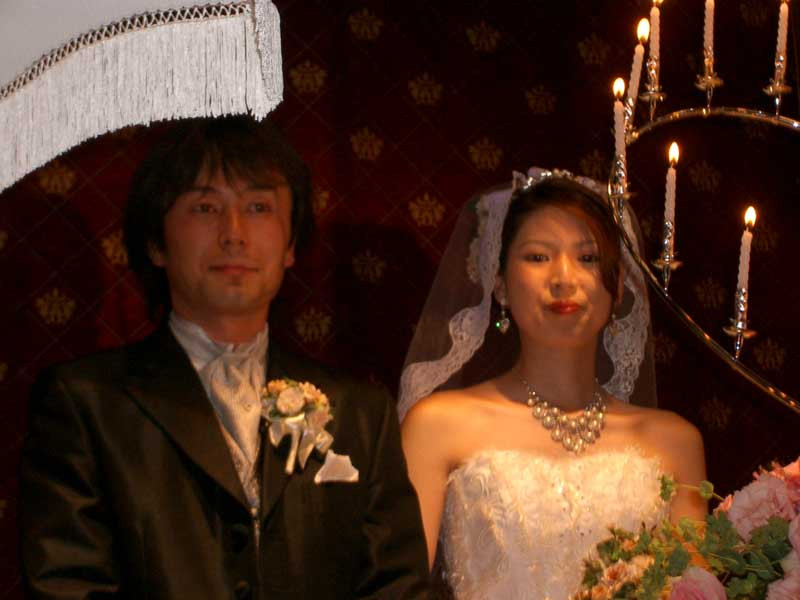 最後の御挨拶
最後に集まってくださった皆様にお礼のご挨拶。無事に終わって一安心です。
| TOPへ 戻る |
| | Kawamura Web | Kensuke Web | |